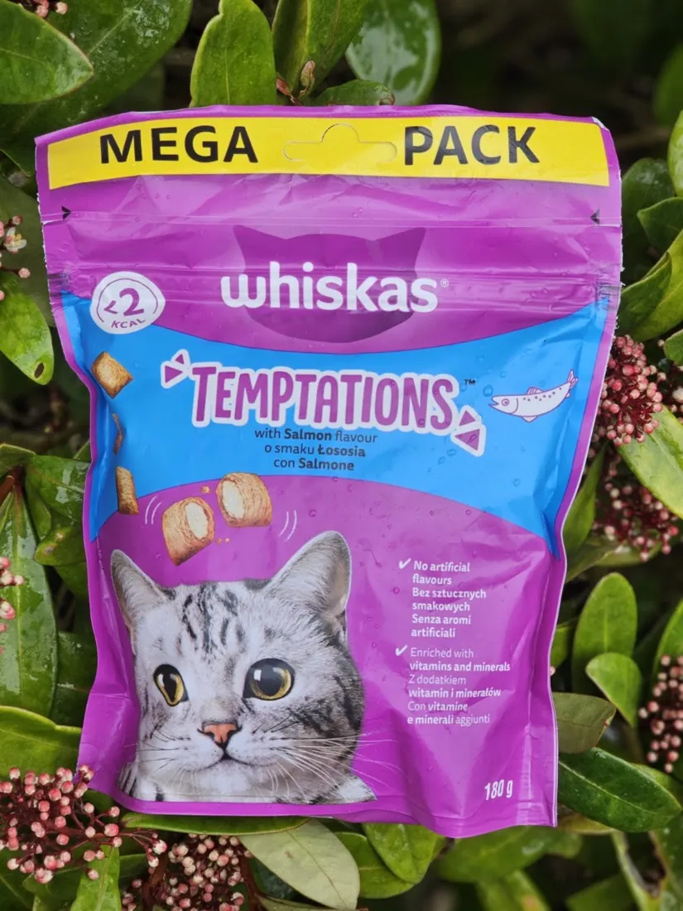

Veterinary care
Ask about wellness, clinical or surgical services and the right next step for your pet.
Explore servicesAsokoro, Abuja
At Vetmedicare veterinary clinic and pet store, your pet can find wellness and clinical care, grooming, a pet store and home-service enquiries in one place. Tell us what you need and we will confirm the best next step.
Need a home visit? Ask about your area and availability
Clinic hours are Monday to Saturday, 09:00 to 17:00. Sunday is closed. Call first for an urgent concern. The listed hours do not confirm after-hours response.
A little care goes a long way
From a clinic visit to grooming and everyday supplies, ask the Vetmedicare team what is available and when.
Ask about wellness, clinical or surgical services and the right next step for your pet.
Explore servicesGrooming is listed among the clinic's services, and a Google review mentions dog grooming. Ask about a suitable time.
Ask about groomingVetmedicare describes a stocked pet department. Message first to check today's items, brands and prices.
Check pet store stockAmbulatory and home service
Vetmedicare lists ambulatory service, and a Google review mentions home services. Share your neighbourhood and what your pet needs so the clinic can confirm coverage and timing.
Pet store and supplies
Vetmedicare describes a well-stocked pet department. Current items and prices can change, so send a quick message before travelling to check availability.

A kind word from a pet owner
Vetmedicare has a 5.0 rating from 28 Google reviews. Here is one review shared by a client.
“I take my dog here for grooming. They are good. I also get his food from here. Great customer service.”Google review
A quick call can make a plan
Call or WhatsApp to confirm the next available time for veterinary care, grooming or a pet store visit. For urgent concerns, call during listed business hours.